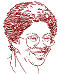

This is an archived copy of History Matters, provided by the Roy Rosenzweig Center for History and New Media. To explore this content in a new interface, visit Who Built America?.


Pat Oldham has spent almost her entire teaching career at one school, Hostos Community College of the City University of New York, where she is a lecturer in the Behavioral-Social Science Department. She was a member of the original faculty at Hostos when the college opened in 1970 and over the years she helped to create much of the Social Sciences curriculum, including courses in United States history, African-American history, and interdisciplinary social science. She has worked extensively with the American Social History Project and has been twice appointed CUNY Faculty Fellow to work with it. In addition to her substantial teaching responsibilities, she continues to work part-time on a dissertation entitled David Ruggles: Afro-Yankee in an Antebellum World of Reform.I. STARTING OUT
1.What drew you to history teaching? Were you, for example, drawn by the subject matter, by particular teachers, or something else?
Actually, I didn’t begin my teaching career as a history teacher. In fact, I worked for a few years in community programs before I began teaching. When I was growing up, my family and friends thought I would go into teaching, but I didn’t see it that way. Maybe later, I told them, and as it turned out that is exactly what happened.
2. When did you start teaching? What are the places you have taught?
My first teaching job was at Hostos Community College. That was in 1970. I can remember seeing an advertisement in the New York Times for “Community College Number 8”, to open in the South Bronx. That was number eight in the City University of New York system. I applied and was hired in the Social Sciences Department. We were and still are a small department. I taught various social science courses, and as the need arose, I began teaching history. I also taught for two years at another City University campus: Borough of Manhattan Community College.
3.Which courses have you taught?
I used to teach Afro-American History I and II“which is now taught in Africana Studies. I teach the U.S. history survey—”U.S. History: Beginnings Through Civil War“ and ”U.S. History: Reconstruction Era to the Present“. I also teach one or two sections of ” Introduction to Social Science" every semester. Our unit is in the process of developing a two-semester world history course, which I will probably teach in the future.
4. Which are your favorite courses to teach? Why?
I especially like teaching the U.S. history survey. Everything’s in it. It’s more of a challenge, and the materials and approaches that are available now are so exciting. Students are usually “with you” in terms of interest in an introduction to social science class. This is usually not the case with history. It’s interesting to try to change the experience that most students have had with history. It’s wonderful when I see students become involved in history when this has been boring for them in the past.
5. Why do you think history has been “boring” for so many students in previous courses?
Students often tell me that history is boring because “you have to remember all those dates and details.” Directly and indirectly they also tell me that the history that they have studied has little to do with their own lives. They don’t see a connection.
6. Did your own experiences mirror that of your students? Did you enjoy history in your pre-college or college days? Did you have any passions for history before you started teaching it? Did anyone in your family?
Both of my brothers loved studying history, but I didn’t understand their interest. I didn’t dislike history in school, but I wasn’t enthusiastic either. One of the best experiences I had with history happened in the fourth grade. Our teacher Miss Pappas held up the history book that we had to read and announced that if we worked hard and read the book quickly, we would read another book, and she held up a book on American Indians. Needless to say, we read like champs and finished both books. When I think about this now, I realize that this was a remarkable step for a fourth-grade teacher to have taken in the 1950s.
It sparked a great interest in me to read about American Indians. Sonia Bleecker wrote a series of children’s books on American Indians—I read all of them (probably six or seven books), and I can remember waiting impatiently for each new book in the series to arrive at our local library. Much later, in college, I enjoyed studying feudalism and ancient history-topics that contained a great deal of what we now call social history. I liked reading biographies for the same reason. There were lives and worlds presented not just a political narrative.
I also had the boring experiences that mirror some of my students' encounters with history. One example was a U. S. history survey course in which we were expected to memorize the major campaigns of the Civil War, complete with dates, locations, and generals.
History, rather than history courses was also part of my life as an African-American growing up in New Jersey. There were old family photographs and stories. The adults didn’t talk much about the problems of the past, but history was there in the form of past generations—grandparents, and great grandparents, great uncles, a great (or great-great) aunt who went to Oberlin, etc. I was very interested in the stories I heard about the South—my mother’s summer trips to Virginia as a child; her childhood in the North; her experiences much later in Washington, D.C. the 1940s working for the war effort in a segregated city; my grandfather’s brief stint in the steel mills.
I never encountered this type of history in a classroom, though. Except for George Washington Carver, African-Americans were pretty much absent from the history books that we had. Slavery would appear suddenly as an “unfortunate” incident. I can remember a high school history teacher saying, “Reconstruction just didn’t work out.” In those days, I didn’t expect my classes to be any different than they were. School was one world; my life and my family were another.
Much later, when I had to select a program of study for graduate school, I left English and turned to history. My thinking was that if history was the study of the past, then I could study anything that interested me.
II. TEACHING THE U.S. SURVEY COURSE
7. In what formats do you teach the US History Survey, e.g., lecture? Discussion? How big are the classes?
The U.S. history survey sections range from 25 to 40 students. I use a discussion format, with occasional mini-lectures.
8. What are the biggest themes that you try to convey? What are the organizing principles of your survey course?
I think the overall theme is “What is America?”—How did it get to be the way we find it today? What are the developments that have shaped this country? How has the understanding of what America is, or should be, changed over time? It’s interesting to take these questions and ask them at different points during the semester. For example, what would the answers be in Jamestown in the 1660s? Or the nation as a whole in the 1890s, etc.? Many of my students are from the Caribbean and Latin America, where nations have often been on the receiving end of U.S. power. Also, they’ve experienced the process of immigration. They are usually quite interested in how the U.S. got to be the way it is. African-American students too are often seeking that connection between then and now. Apart from the general theme, I organize the course around major developments: American beginnings, expansion, industrialization, reform, and so on.
9. You mentioned that you had many students from the Caribbean and Latin America. Do you think that the growing numbers of immigrant students in our classes has affected (or should affect) the teaching of a specifically national history—the story of the United States? Some people, for example, argue that we are moving into a “post-national” era in which national boundaries no longer matter as much. What does that mean for the tradition of teaching history organized along national lines?
I think that having students from other countries in my classroom has changed what I do with the U.S. history survey and rightfully so. It affects the materials I select, and references that I make in class. On a deeper level, it’s caused me to think closely about my perspective—am I explaining enough? Are my statements too narrow? I really became conscious of this some years back when I had a student from China in the class, and I realized I had no materials on Chinese-American history and knew very little about it. I don’t think that students need to, or want to, only read about themselves. But in a U.S. history survey, there’s something wrong, if students can’t find themselves in the materials, or can’t see how their odyssey and story are linked to themes in the development of the U.S. I don’t think that adding these other stories makes U.S. history less national or national history irrelevant; it just changes our perception of the nation.
The validity of national history, though, is an interesting question. I like the trend toward world and regional views of history; it’s a useful curative for the tendency to see U.S. history only in its particularity or only as a unique saga. I see the difference it can make for students when they see a map of the Atlantic slave trade, and realize that slavery was a development affecting—and creating—an Atlantic world, not just a strip of the North American continent. The national history becomes the way in which these larger developments unfold. As political entities, nations such as the U.S. have certainly exercised great power and need to be studied historically.
10. What are some of the challenges and rewards of teaching in a multicultural classroom?
The rewards are being able to work with various experiences and perspectives—this provides a freshness and unpredictability to the classroom. Even having to sometimes explain ourselves to each other can make a class session interesting. There’s also a sense of immediacy when you are exploring a topic that has obvious connections to the students—U.S. imperialism becomes particularly vivid when half of the class is from countries that the U.S. has invaded at one time or another. So, the reactions, the questions, the experiences that the students bring to the classroom are an important element, as they would be in any class. And in my classes, some of the topics are deeply serious matters for the students. For example, some students do not want to study the topic of slavery, and yet obviously the history of the U.S. makes no sense unless you study slavery. I’ve had hot discussions in the class—cutting across ethnic lines—in which students argue about whether we should “keep talking” about slavery and race. As a teacher I have to acknowledge those concerns, and show that slavery is vitally connected to what America was and is. The new scholarship on Africans in America before the Civil War is important, of course, because it opens up a world of African-Americans as subjects and not just objects.
11. Is it possible to use history as a “safe” place in which ethnic and racial tensions can be talked about?
That’s an interesting question. Obviously, history can help illuminate the origins of contemporary problems and old enmities, but I don’t think history provides a safe place for that exploration—an ultimately satisfying place, perhaps, but not a safe one. Emotions can boil up in the classroom, or in Congress, as the recent debate over national standards in history illustrates. In the classroom, it’s possible to structure the discussion so that students are not just venting their feelings: You can have students write first and then talk; ask each student to make a statement, one at a time, with no commentary; or just move on to another topic if no new ideas or facts are being presented.
12. What are your most important goals in teaching the survey course?
I have several goals, which exist in a somewhat tense relationship. I want to present history in such a way that students keep talking about history after the class is over. I want to present the history of groups that traditionally have been omitted or slighted, such as African-Americans, women, and working people in general. I also want to give them a chance to experience working with primary sources, and debate interpretations of the past. I also have an obligation to see to it that students acquire basic points of reference that they will be expected to have when they go on to a four-year college and jobs. They need to know what is meant by the Articles of Confederation, carpetbaggers, Progressive Era, etc.
13. That’s a wonderful way of framing what we should be doing: teaching so that “students keep talking about history after the class is over.” What are the topics you talk about or teaching strategies you use that you think are most successful in reaching that goal?
I’ve found students can become very involved in history when they are asked to take a position on a topic in which there is no clear right answer. The key is to find a question that is interesting or controversial and leaves room for students to interpret. This can occur in role-playing. For example, when we study sharecropping, I often put students in groups, give them an actual sharecropping contract and ask them to renegotiate and write a contract for the coming year. I arbitrarily assign one or two students in each group to be the landowner, with the remaining students playing the role of sharecroppers. The class usually ends with students still in their seats negotiating and arguing or continuing their roles as they leave the room. They’re creative also. Croppers have threatened to go on strike or join the Exodusters in Kansas; a landowner remembered he had a cousin who was a sheriff and threatened to call on his help. We do a reality check also, so that we don’t have croppers applying for unemployment benefits. I think exercises like these help get students involved in the past and also allow them to see the differences between then and now, as well as the continuity.
I’ve found that students are especially interested in social history and social issues—workers' lives, immigration, religion, etc. But the topic doesn’t have to be explosive in order to engage their interest. For example, I often ask my class to decide which figure best describes colonial society: a circle, square, pyramid, or rectangle and why.
The first time that I tried this I didn’t expect much of a response—it was something that I had used in my social science class and wondered how it would work in a history class. The history students become quite involved in the exercise—debating and defending their choices. Where do you place women or free African-Americans? How do you acknowledge the presence of American Indians? I’m usually able to step aside and let the students take over the discussion, intervening only with questions or restatements of their interpretations. So, I think it’s not merely the topic that leads to students' involvement. There has to be a central question and one that leaves room for students to work—that moves them away from “Is this what you want?” to “I think...”
14. What do you most want students to take away from a U.S. survey course with you?
I want students to see that the history of this nation is a living, breathing process, which continues to change, and that they can play a role in shaping this process.
15. What are the most effective assignments that you use in the U.S. Survey course? What is good about them?
The most effective assignments are ones in which students respond in writing to the material that they are studying and try to make sense out of it. I like to do post-writes at the end of the class (or sometimes midway in the class) in which I ask two questions: “What was the most important point(s) that we studied today? What questions do you still have” Post-writes force students to reflect on what they’re studying and allows me to catch errors in content. I’m also able to stay in touch with more students than I could otherwise in a large class, and continue the class discussion by writing comments and questions on their papers. It’s also effective to select a few issues from the post-writes and discuss them in the next class.
I also like to have students select and analyze a primary source (visual or written) several times during the semester. The exercise allows them choice, but also requires them to explain the reasons for their choice and to work with their selection—identifying important details, thinking about creator of the document, considering connections to the topic, and developing questions. They have to do what historians do.
On exams, I like to test the students' knowledge base by asking them to “define or identify” historical terms and references. Students often tell me that they like this kind of question because it’s short and to the point, and “either you know it or you don’t.” I also use essay questions that require students to take a position and defend it. For example, I like to give them a series of words or phrases and ask them to select and defend the one which best describes an historical event or situation. For instance, “Which of the following words (”meeting,“ "invasion,” or “exchange”) best describes the arrival of Europeans in America?") I think that interpretive questions like this are more interesting and useful for students to write than a question that asks them to tell me what I told you.
III. REFLECTIONS ON TEACHING
16. What is your most memorable or rewarding teaching experience?
I think the best teaching experiences, the most rewarding moments are when students let me know that some material or idea from the class has sparked their interest or they have made the material their own in some way. A couple of instances come to mind. Two students have told me that they have taken the Who Built America? viewer’s guides to work and shared them with their co-workers—one of them held a study group in the post office. A student last year said that her project on slave narratives was the hardest work she had ever done and also the most satisfying.
I also think of the time that another teacher and I worked with a small group of college and high school students who were creating a history newsletter. I think we called the paper “Then and Now”. This was an extra credit project, and the idea was to bring history to the whole school and to the community. We did not succeed in getting the project underway, but there was one memorable afternoon, when six or seven of us sat in a room and created on the blackboard a rather remarkable editorial statement on what we wanted to do and why.
17. What was your worst teaching experience?
I remember returning from an educational leave and teaching a history class in which I kept referring to various historical interpretations and perspectives—what this person thought and that one. Mentally, I was still in a graduate school seminar. This was not at all what the students wanted and they let me know. “We don’t care what these other people think”, one student yelled, “tell us what you think.” This was just a part of her tirade. The whole class came to a halt. We talked about the problem for quite a while, and I got past that moment. But I had to rethink what I was trying to do and how I was doing it.
18. How, if at all, has teaching changed over your career?
The workload has increased tremendously. The university added a course to the teaching load, so that we now teach a four/five course load each year. The union had to go to court to keep the increase from staying at five courses each semester. Class size has also gone up dramatically. When I began teaching at Hostos, classes were limited to thirty or thirty-five students. A class of twenty students raised no eyebrows. Today, the maximum is forty, and it sometimes creeps above that. A class of twenty students now looks like weak enrollment. We’ve had to justify keeping a class of fifteen students. This is all being driven by fiscal considerations, of course, and the current political climate.
I’ve seen changes in the student body also. We have more students coming directly from high school, and this has altered the dynamics of the classroom. They are sometimes the young and the restless, but you can tap into that energy, though you may have to work hard to get their attention.
This is quite different from the earlier days of the college, when the average age of the students was twenty-seven. We had many hospital workers in their thirties and forties who were going to college through a Local 1199 program. They were mature, focused and brought a great deal of knowledge and experience with them. I’ve also noticed a growing cynicism among the students. They tell me that everything’s lousy and it’s always going to be that way. But this pessimism seems to be weakening.
19. What, in your view, constitutes good teaching? Can it be defined?
This is a tough question, and I’m tempted to pass on this one. I think good teaching requires a knowledgeable teacher who can also make connections with the students, who is there for the students and not the other way around. There is no one style that characterizes good teaching, but the common ground is that good teaching stimulates learning.
20. What tips would you give to a new history teache, particularly someone approaching the survey course?
Make your expectations clear to the students, but also try to find out where your students are—what are their expectations and assumptions? What is their frame of reference? “A long time ago” for many of my students, I discovered, is the 1950s.
Find ways to help students organize the reading and notes for the course, and prepare for exams. For instance, they may be unaccustomed to the extensive reading involved in a history course. Often they’re not sure what they’re supposed to do with the information, and they’re uncertain about what’s important and what’s not. Using themes and thematic questions helps to organize the course and keep students focused. However, students in a survey also want some sense of a narrative spine.
Keep in mind that teaching is not the same thing as learning. You may feel that you presented an excellent lesson, but how much of it did students receive, and what responsibilities do you have to improve their level of reception? Finally, I would recommend that new teachers remember why they became interested in studying history and try to create situations in which students can also experience that excitement. And talk with other teachers that you trust and respect. Find out what works for them.
Interview conducted by Roy Rosenzweig; completed in January 2001.